Beyond Basics
This tutorial continues where the “Plotting Basics” tutorial (https://rsconnect.calvin.edu/content/8/) left off. It shows you how to make a few more subtle modifications to your plots, and demonstrates how to make a few additional types of figures.
Themes
Using predefined themes
A number of predefined themes exist that control the appearance of non-data elements of plots. In this tutorial, we set the default theme using
theme_set(theme_bw())Other themes include theme_minimal(), theme_classic(), theme_gray(), theme_light(), theme_map(), and theme_quickmap(). The ggthemes package includes some additional themes, including theme_economist(), theme_economist_white(), theme_excel(), theme_fivethirtyeight(), theme_stata(), theme_tufte(), and theme_wsj(). Many of these themes mimic the look of other software packages or of popular publications.
The theme can be set for an individual plot using gf_theme() – for example:
gf_bar(~ Race1, data = NHANES) %>%
gf_theme(theme = theme_wsj())Test some themes
Choose some different themes in place of theme_wsj() and see how the resulting plot changes.
Remember, options include theme_minimal(), theme_classic(), theme_gray(), theme_light(), theme_map(), and theme_quickmap(). The ggthemes package includes some additional themes, including theme_economist(), theme_economist_white(), theme_excel(), theme_fivethirtyeight(), theme_stata(), theme_tufte(), and theme_wsj().
gf_bar(~ Race1, data = NHANES) %>%
gf_theme(theme = theme_wsj())Changing text font sizes
Themes have optional arguments. One of the most useful is base_size, which controls the base font size (in points). (base_size is an input argument to the theme, so it goes inside the parentheses after the theme name… ) Try adjusting the font size and theme in the figure below - what theme and size do you think are optimal?
gf_bar(~ Race1, data = NHANES) %>%
gf_theme(theme = theme_wsj(base_size = 6))Jitter plots
If you would like to display the values of a quantitative variable for a few different groups, it is sometimes preferable to simply show all the data points instead of showing box plots or histograms for each group. Generally, this is a better idea for small datasets than for large ones!
Why not just use a scatter plot?
One (crude) way to do this is to just make a scatter plot of a quantitative variable as a function of a categorical one:
gf_point(height ~ sex, data=Galton)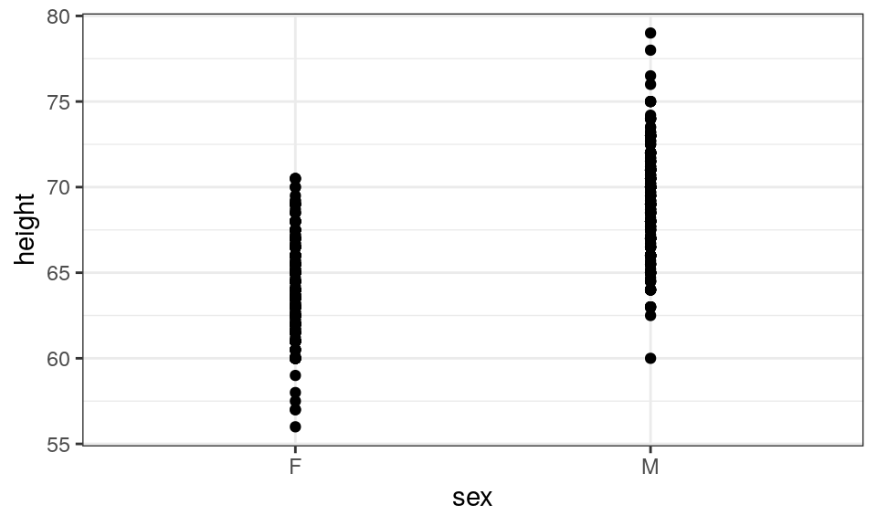
So much is wrong with this. It’s hard to see all the data points, because they are on top of each other, and the overall look of the plot is not pleasing.
Transparency to Reduce Overplotting
When a lot of the data points are overplotted (on top of each other), so it’s hard to see how many observations there really are near, say, females 65 inches tall.
Adding transparency might help a bit:
gf_point(height ~ sex, data=Galton, alpha=0.1)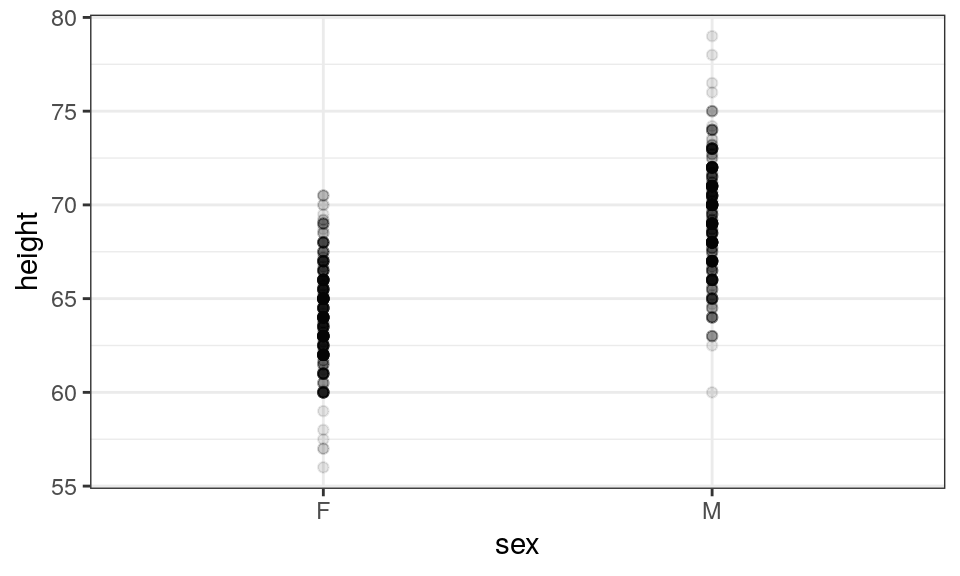
Well, it helped, but didn’t totally solve the problem.
Jitter plot to the rescue!
One way to improve this plot further would be to plot the data in clusters rather than vertical lines. The function gf_jitter() makes such plots.
gf_jitter(height ~ sex, data=Galton, alpha=0.5)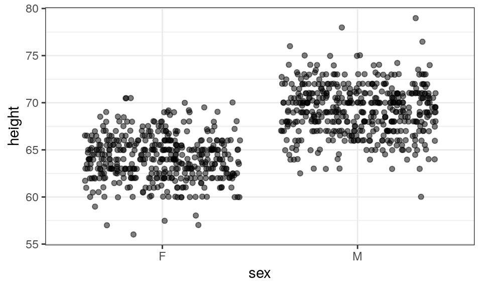
If desired, you can adjust the width of the clusters using the input width. width is a proportion. Its default value is 0.4, which means the jittered data points will occupy 80% of the space between groups.
A width of 0.5 or larger is too big - it will make it difficult or impossible to distinguish the clusters:
gf_jitter(height ~ sex, data=Galton, alpha=0.5, width=0.5)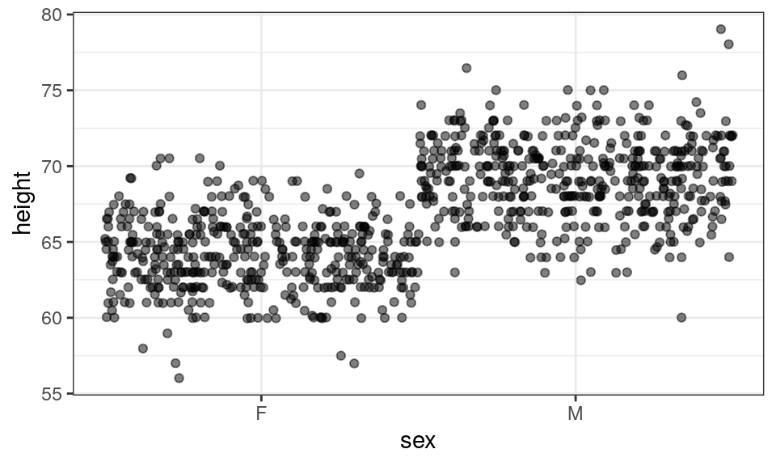
But we might want to try a smaller width:
gf_jitter(height ~ sex, data=Galton, alpha=0.5, width=0.25)
Your Turn!
Use the iris dataset (which is built in to base R) and create a jitter plot.
Violin Plots
A compromise between side-by-side boxplots, histograms, and jitter plots (for plots of a quantitative variable by groups) is the violin plot. This kind of plot is similar to a boxplot, but instead of a box, it shows a smoothed histogram (density plot) flipped on its side, and also mirrored (imagine two histograms joined base-to-base).
The function gf_violin() makes violin plots.
It’s easier to show than to explain, perhaps. Compare the boxplots and violin plots below to get an idea:
gf_boxplot(height ~ sex, data=Galton)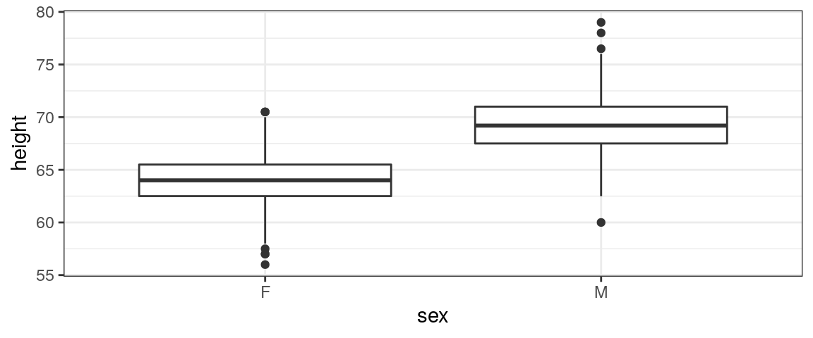
Violin plots are only a good idea if you have enough data points in each category to get a pretty good idea of the shape of the distribution, and justify approximating that shape with a smooth curve. If you only have a few data points per category, violins are not an ideal choice.
Violin + Jitter?
Sometimes it might be desirable to overlay the actual data points (a jitter plot) atop a violin or boxplot, like so:
gf_boxplot(height ~ sex, data=Galton) %>%
gf_jitter(alpha=0.2, width=0.3, color='grey34')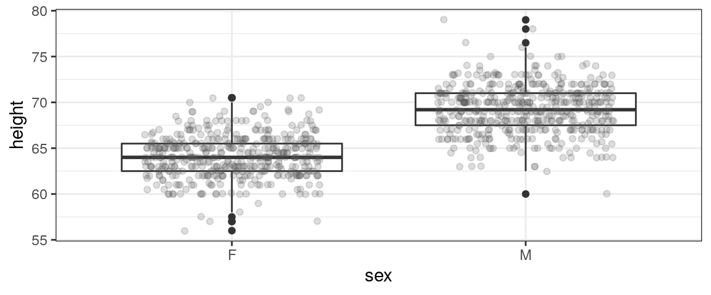
gf_violin(height ~ sex, data=Galton) %>%
gf_jitter(alpha=0.2, width=0.3, color='grey34')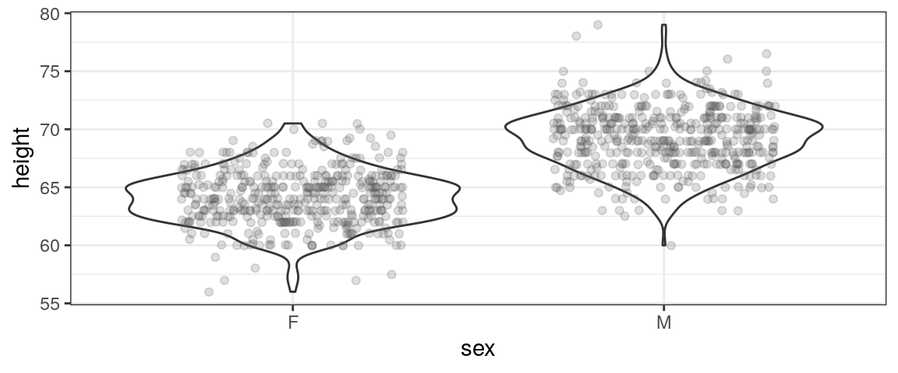
Your Turn!
Use the iris dataset (or another of your choice – maybe HELPrct?) and experiment with violin plots.
Pie Charts
Making nice pie charts in R is a bit of work, because most of the plotting libraries are not set up to do it well…you have to force them to do your will. Don’t say you weren’t warned! But, with a little effort, you can make decent pie charts.
A simple example, first. What if we want to show the proportion people of each race (variable name Race1) in the NHANES dataset?
Strangely enough, we want to start with a stacked bar chart colored by race, like this. We include 1 rather than a variable name in the formula (because we want just one stacked bar), and we add the input width=1 because we want the single bar to take up the whole width of the graph.
gf_bar(~1, fill=~Race1, data=NHANES, width=1)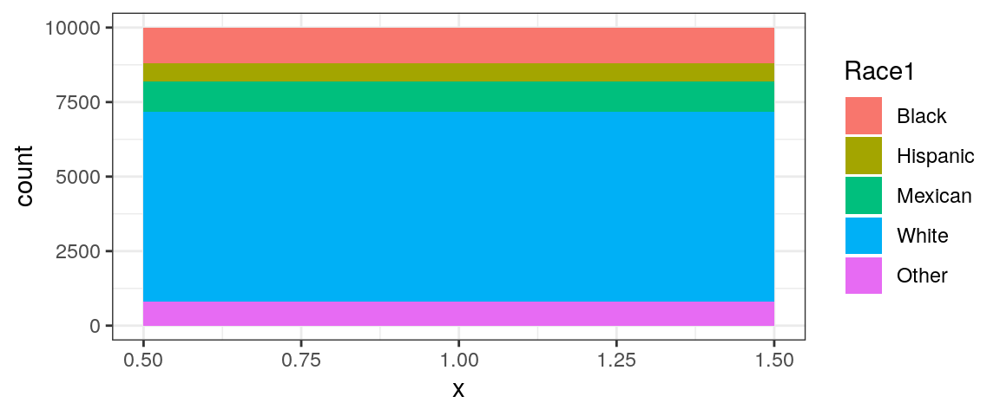
Now, to turn this into a pie chart, we will add the magical code + coord_polar('y'). (Don’t change anything - it is always ‘y’ exactly as written, regardless of variable names being plotted. This actually changes the plot to polar coordinates, which makes it look like a pie…)
gf_bar(~1, fill=~Race1, data=NHANES, width=1) + coord_polar('y')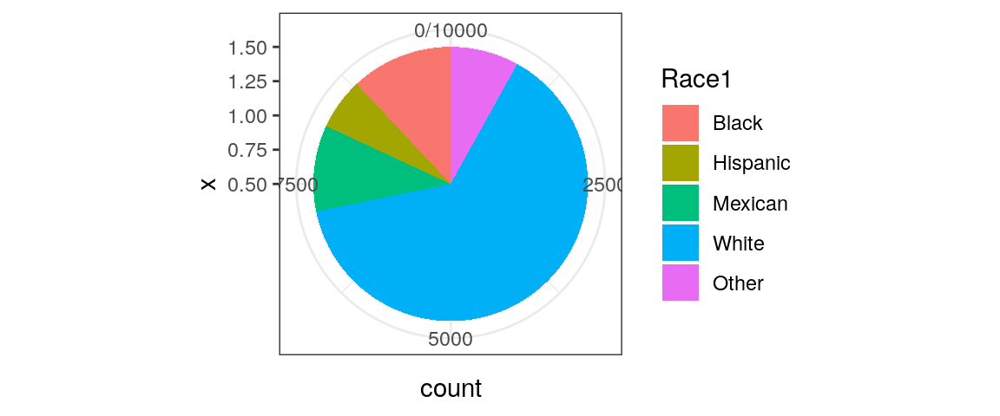
Removing the junk
Well, it’s close…but why is there a little X-axis scale on the y axis of the plot, and how can we get rid of all the axis ticks and labels?
To do this relatively simply, we will create a “blank” plot theme that doesn’t contain any of these elements. (You could include this code in the settings chunk, if working in an Rmd file.)
blank_theme <- theme_minimal()+
theme(
axis.title.x = element_blank(),
axis.title.y = element_blank(),
panel.border = element_blank(),
panel.grid=element_blank(),
axis.ticks = element_blank(),
axis.text.x = element_blank(),
axis.text.y = element_blank()
)Now, make the plot again, but use this theme (adding the theme before the + coord_polar('y')):
gf_bar(~1, fill=~Race1, data=NHANES, width=1) %>%
gf_theme(blank_theme) +
coord_polar('y')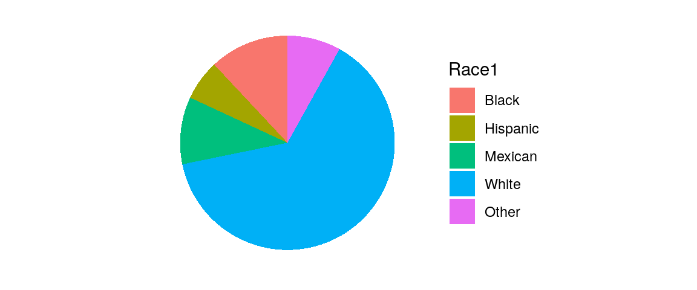
Side by side pie charts
Once you have a pie chart, you can use facets to make side-by-side pies for different groups. For example, what if we plotted pie charts of race for each gender in NHANES?
We just need to add | group_variable to the gf_bar() formula, and then also add the verbatim additional input position=position_fill(). (The position input makes sure that both pies are complete, without any slices missing…)
gf_bar(~ 1 | Gender, fill=~Race1, data=NHANES, width=1,
position=position_fill()) %>%
gf_theme(blank_theme) +
coord_polar('y')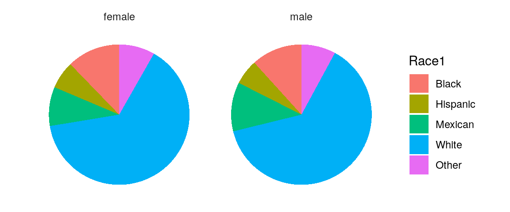
Contour and Raster Plots
If you are interested in the relationship of three quantitative variables, one option is a contour plot, which can be made with gf_contour. The formula for gf_contour is of the form $ z x + y$. For example, are there patterns in the number of babies born by month (1-12) and day of the month (1-31)?
gf_contour(births ~ day_of_month + month, data=Births1978)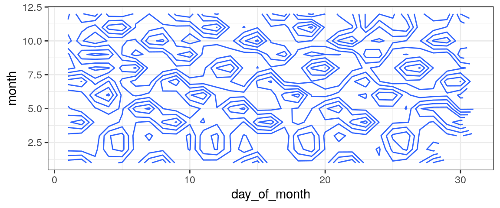
Hmm…interesting, if hard to make sense of. (Think about weekends - do they always fall on the same numeric days of the month?)
Another way to visualize this relationship is with a density plot (heat map), created via gf_raster. Its formula is of the form \(y \sim x\), with input fill indicating the variable to color by:
gf_raster(month ~ day_of_month, fill=~births, data=Births1978)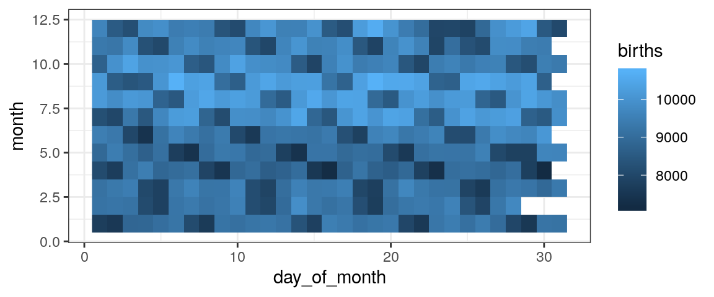
And if we combine them?
gf_raster(month ~ day_of_month, fill=~births, data=Births1978) %>%
gf_contour(births ~ day_of_month + month, data=Births1978, color='white')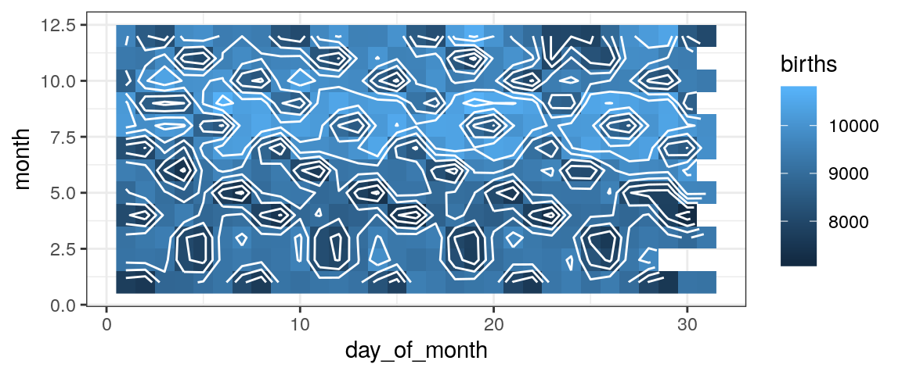
Your Turn!
The dataset at http://sldr.netlify.com/data/EIA.csv contains simulated data from an environmental impact assessment to determine the effects of wind farms on duck abundance. Variable xcode and ycode indicate the x and y positions at which each data point was collected. Variable count indicates the number of ducks observed at each (x,y) location during the study. Variable impact is 0 before the wind farm was operational, and 1 when it was operating. Make a raster plot to explore this data.
Note: gf_contour() only works for data with a single observation of the variable to be contoured for each unique combination of the \(x\) and \(y\) variables, so it will not work on this dataset.
Pairs Plots
Sometimes it can be useful to make a matrix of pairwise scatterplots (or side-by-side boxplots) for all possible pairs of variables in a dataset. This is a quick way to look for patterns, but could be tedious to acheive if you have a lot of variables and have to make all the plots one by one. The function ggpairs from package GGally makes it easy; its first input is the dataset you want to plot.
As an example, let’s use the built-in dataset flea, which contains data on body size measurements for 3 species of fleas.
ggpairs(flea)Along the diagonal of the matrix of plots, you see a distribution plot for each individual variable (bar graphs for categorical ones, and density plots for quantitative ones). For pairs of quantitative variables, the rest of the matrix is filled in as follows. In the upper half of the matrix, the correlation coefficients between quantitative variable pairs are shown, and the lower half shows scatter plots. (For categorical-quantitative pairs, histograms or boxplots by category are shown.)
Your turn!
Make a pairs plot for the iris dataset. See any interesting patterns?